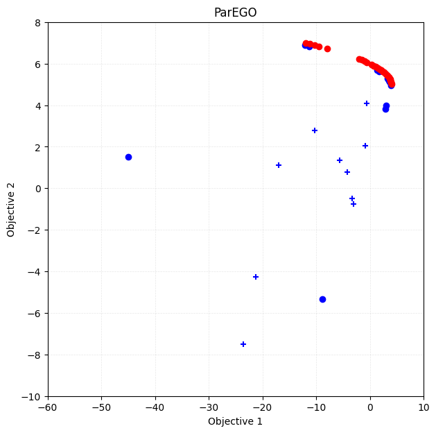
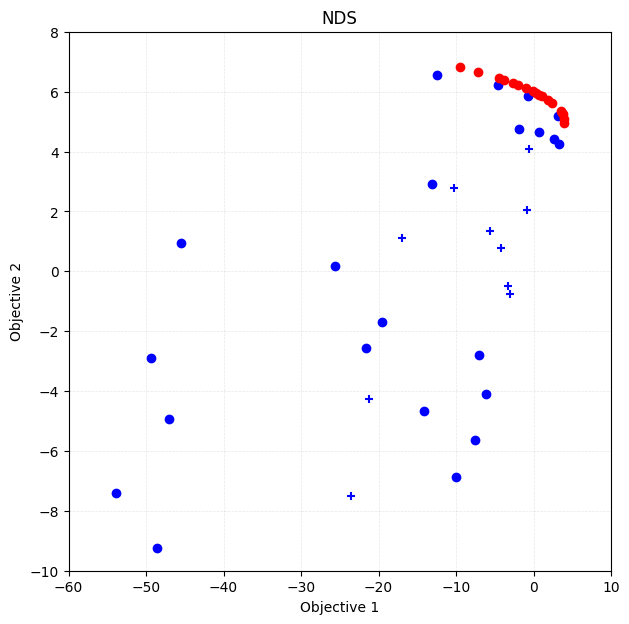

This jupyter notebook file is available at ISSP Data Repository (master branch).
Fast Computation for Multi-objective Optimization
In the previous tutorial, we independently modeled each objective function using Gaussian process and directly maximized the Pareto hypervolume. However, this approach becomes computationally expensive when the number of objective functions increases.
In this tutorial, we will learn how to speed up multi-objective optimization by unifying multiple objective functions into a single objective function, and performing Bayesian optimization on that unified objective.
Unification of Multi-objective Optimization
Let the \(i\)-th data point (feature vector) be \(\vec{x}_i\), and its objective values be \(\vec{y}_i = (y_{i,1}, y_{i,2}, \dots, y_{i,p})\). We construct a new unified objective \(z_i\) from \(\vec{y}_i\). We model the function from \(\vec{x}_i\) to \(z_i\), \(z_i = g(\vec{x}_i)\), by Gaussian process regression and perform Bayesian optimization on it.
In the current version of PHYSBO, two methods are provided to construct \(z_i\) from \(\vec{y}_i\): the Non-dominated Sorting (NDS) method and the ParEGO method.
Non-dominated Sorting Method
Definition
Non-dominated Sorting (NDS) is a method where the training data \(\vec{y}_i\) are ranked using non-dominated sorting, and a new objective function is created based on these ranks. The rank is recursively defined as follows:
Points that are on the Pareto front of the entire training dataset are assigned a rank of \(r_i = 1\).
After removing the points with rank \(r_i = 1\), the points on the next Pareto front are assigned a rank of \(r_i = 2\).
Similarly, after removing all points with ranks \(r_i = 1,2,\dots,k-1\), the points on the next Pareto front are assigned a rank of \(r_i = k\).
This process is repeated until the maximum rank \(r_\text{max}\) is reached. Any remaining points are assigned \(r_i = \infty\).
Based on the rank \(r_i\), the new objective function \(z_i\) is defined as follows and is maximized:
How to Use in PHYSBO
In PHYSBO, the NDS method is implemented as the physbo.search.unify.NDS class.
unify_method = physbo.search.unify.NDS(rank_max=10)
Any points with ranks above rank_max are handled as \(z_i = 0\).
ParEGO Method
Definition
The ParEGO method converts multi-objective optimization into single-objective optimization by taking a weighted sum and a weighted minimum of the objective function values. Let the weights for the objectives be \(\vec{w} = (w_1, w_2, \dots, w_p)\), and let the coefficients for sum and minimum be \(\rho_\text{sum}\) and \(\rho_\text{min}\), respectively. Then, the new unified objective function is defined as:
This objective function is to be maximized by Bayesian optimization.
Note that PHYSBO’s unified objective function includes the minimum term while the original ParEGO does the maximum term because PHYSBO treats the maximization problem while the original ParEGO treats the minimization problem.
Usage in PHYSBO
In PHYSBO, the ParEGO method is implemented as the physbo.search.unify.ParEGO class.
unify_method = physbo.search.unify.ParEGO(weight_sum=0.05, weight_min=1.0, weights=None, weights_discrete=0)
weight_sum and weight_min correspond to \(\rho_\text{sum}\) and \(\rho_\text{min}\), respectively. weights specifies the weight vector \(\vec{w}\).
The weights \(\vec{w}\) are automatically normalized so that \(\sum_{j} w_j = 1\).
If
weights = None, weights are randomly generated at each Bayesian optimization step.If
weights_discreteis set to an integer \(s>0\), each weight is generated as \(w_j = \frac{a_j}{s}\).Here \(a_j\) is an integer from \(0\) to \(s\), and \(\sum_{j} a_j = s\).
If \(s=0\), weights are sampled uniformly at random from \([0,1)\) and then normalized so that their sum is 1.
Also, for each objective \(j\), \(y_{i,j}\) is normalized to the range \([-1, 0]\) using the minimum and maximum values in the training data.
Tutorial
Preparations
[1]:
import time
import numpy as np
import matplotlib.pyplot as plt
import pandas as pd
import physbo
%matplotlib inline
seed = 12345
num_random_search = 10
num_bayes_search = 40
Test Functions
In this tutorial, we continue to use VLMOP2, which is a benchmark function for multi-objective optimization. PHYSBO provides several multi-objective benchmark functions, including VLMOP2, under physbo.test_functions.multi_objective.
[2]:
sim_fn = physbo.test_functions.multi_objective.VLMOP2(dim=2)
Preparing Candidate Data for Search
The sim_fn object contains min_X and max_X, which specify the minimum and maximum values of the search space. Using these, you can generate a grid of candidate points with physbo.search.utility.make_grid.
[3]:
test_X = physbo.search.utility.make_grid(
min_X=sim_fn.min_X, max_X=sim_fn.max_X, num_X=101
)
simulator
[4]:
simu = physbo.search.utility.Simulator(test_X=test_X, test_function=sim_fn)
HVPI
As a comparison, we perform Bayesian optimization using HVPI.
[5]:
policy = physbo.search.discrete_multi.Policy(test_X=test_X, num_objectives=2)
policy.set_seed(seed)
policy.random_search(max_num_probes=num_random_search, simulator=simu, is_disp=False)
time_start = time.time()
res_HVPI = policy.bayes_search(
max_num_probes=num_bayes_search,
simulator=simu,
score="HVPI",
interval=10,
is_disp=False,
)
time_HVPI = time.time() - time_start
time_HVPI
[5]:
4.565851926803589
[6]:
fig, ax = plt.subplots(figsize=(7, 7))
physbo.search.utility.plot_pareto_front_all(
res_HVPI, ax=ax, steps_end=num_random_search, style_common={"marker": "+"}
)
physbo.search.utility.plot_pareto_front_all(
res_HVPI, ax=ax, steps_begin=num_random_search
)
ax.set_title("HVPI")
[6]:
Text(0.5, 1.0, 'HVPI')

[7]:
VID_HVPI = res_HVPI.pareto.volume_in_dominance([-1,-1],[0,0])
VID_HVPI
[7]:
np.float64(0.3285497837573861)
Bayesian Optimization with Unified Objective
Use the physbo.search.discrete_unified.Policy class as Policy class.
As with other Policy classes, you can create initial data using random_search etc., and perform Bayesian optimization with the bayes_search method. The difference from other Policy classes is as follows.
Unification of Objective Function
The algorithm used for unification is specified by the unify_method argument of the bayes_search method. PHYSBO provides physbo.search.unify.ParEGO and physbo.search.unify.NDS.
Acquisition Function
The acquisition function is the same as that for single-objective optimization.
PI (Probability of Improvement)
EI (Expected Improvement)
TS (Thompson Sampling)
NDS
[8]:
policy = physbo.search.discrete_unified.Policy(test_X=test_X, num_objectives=2)
policy.set_seed(seed)
unify_method = physbo.search.unify.NDS(num_objectives=2)
policy.random_search(max_num_probes=num_random_search, simulator=simu, is_disp=False)
time_start = time.time()
res_NDS = policy.bayes_search(
max_num_probes=num_bayes_search,
simulator=simu,
unify_method=unify_method,
score="EI",
interval=10,
is_disp=False,
)
time_NDS = time.time() - time_start
time_NDS
[8]:
1.9656922817230225
Plotting Pareto Front
[9]:
fig, ax = plt.subplots(figsize=(7, 7))
physbo.search.utility.plot_pareto_front_all(
res_NDS, ax=ax, steps_end=num_random_search, style_common={"marker": "+"}
)
physbo.search.utility.plot_pareto_front_all(
res_NDS, ax=ax, steps_begin=num_random_search
)
ax.set_title("NDS")
[9]:
Text(0.5, 1.0, 'NDS')

Volume of Dominance Region
[10]:
VID_NDS = res_NDS.pareto.volume_in_dominance([-1,-1],[0,0])
VID_NDS
[10]:
np.float64(0.30923409715730354)
ParEGO
[11]:
policy = physbo.search.discrete_unified.Policy(test_X=test_X, num_objectives=2)
policy.set_seed(seed)
unify_method = physbo.search.unify.ParEGO(num_objectives=2)
res_random = policy.random_search(
max_num_probes=num_random_search, simulator=simu, is_disp=False
)
time_start = time.time()
res_ParEGO = policy.bayes_search(
max_num_probes=num_bayes_search,
simulator=simu,
unify_method=unify_method,
score="EI",
interval=10,
is_disp=False,
)
time_ParEGO = time.time() - time_start
time_ParEGO
[11]:
1.9838640689849854
Plotting Pareto Front
[12]:
fig, ax = plt.subplots(figsize=(7, 7))
physbo.search.utility.plot_pareto_front_all(
res_ParEGO, ax=ax, steps_end=num_random_search, style_common={"marker": "+"}
)
physbo.search.utility.plot_pareto_front_all(
res_ParEGO, ax=ax, steps_begin=num_random_search
)
ax.set_title("ParEGO")
[12]:
Text(0.5, 1.0, 'ParEGO')

Volume of Dominance Region
[13]:
VID_ParEGO = res_ParEGO.pareto.volume_in_dominance([-1,-1],[0,0])
VID_ParEGO
[13]:
np.float64(0.30738182186615104)
Comparison of Results
[14]:
# make table
df = pd.DataFrame({
"Algorithm": ["NDS", "ParEGO", "HVPI"],
"Computation Time": [time_NDS, time_ParEGO, time_HVPI],
"Volume of Dominance Region": [VID_NDS, VID_ParEGO, VID_HVPI]
})
df
[14]:
| Algorithm | Computation Time | Volume of Dominance Region | |
|---|---|---|---|
| 0 | NDS | 1.965692 | 0.309234 |
| 1 | ParEGO | 1.983864 | 0.307382 |
| 2 | HVPI | 4.565852 | 0.328550 |
NDS achieves a comparable result in terms of the volume of the dominance region to HVPI, but with a shorter computation time.
On the other hand, while ParEGO has the shortest computation time, the volume of the dominance region it achieves is smaller.
Depending on the optimization problem, the algorithm that produces the best results may vary as seen below.
Another Benchmark Function
We now perform Bayesian optimization using the Kita-Yabumoto-Mori-Nishikawa function:
Furthermore, \(x\) and \(y\) have the following constraints:
Kita, H., Yabumoto, Y., Mori, N., Nishikawa, Y. (1996). Multi-objective optimization by means of the thermodynamical genetic algorithm. In: Voigt, HM., Ebeling, W., Rechenberg, I., Schwefel, HP. (eds) Parallel Problem Solving from Nature — PPSN IV. PPSN 1996. Lecture Notes in Computer Science, vol 1141. Springer, Berlin, Heidelberg. https://doi.org/10.1007/3-540-61723-X_1014
[15]:
fn_KYMN = physbo.test_functions.multi_objective.KitaYabumotoMoriNishikawa()
test_X_KYMN = physbo.search.utility.make_grid(
min_X=fn_KYMN.min_X, max_X=fn_KYMN.max_X, num_X=101, constraint=fn_KYMN.constraint
)
simu_KYMN = physbo.search.utility.Simulator(test_X=test_X_KYMN, test_function=fn_KYMN)
HVPI
[16]:
policy = physbo.search.discrete_multi.Policy(test_X=test_X_KYMN, num_objectives=2)
policy.set_seed(seed)
policy.random_search(max_num_probes=num_random_search, simulator=simu_KYMN, is_disp=False)
time_start = time.time()
res_KYMN_HVPI = policy.bayes_search(
max_num_probes=num_bayes_search,
simulator=simu_KYMN,
score="HVPI",
interval=10,
is_disp=False,
)
time_KYMN_HVPI = time.time() - time_start
VID_KYMN_HVPI = res_KYMN_HVPI.pareto.volume_in_dominance(
fn_KYMN.reference_min, fn_KYMN.reference_max
)
VID_KYMN_HVPI
fig, ax = plt.subplots(figsize=(7, 7))
physbo.search.utility.plot_pareto_front_all(
res_KYMN_HVPI, ax=ax, steps_end=num_random_search, style_common={"marker": "+"}
)
physbo.search.utility.plot_pareto_front_all(
res_KYMN_HVPI, ax=ax, steps_begin=num_random_search
)
ax.set_xlim(-60, 10)
ax.set_ylim(-10, 8)
ax.set_title("HVPI")
[16]:
Text(0.5, 1.0, 'HVPI')

ParEGO
[17]:
policy = physbo.search.discrete_unified.Policy(test_X=test_X_KYMN, num_objectives=2)
policy.set_seed(seed)
unify_method = physbo.search.unify.ParEGO(num_objectives=2)
policy.random_search(max_num_probes=num_random_search, simulator=simu_KYMN, is_disp=False)
time_start = time.time()
res_KYMN_ParEGO = policy.bayes_search(
max_num_probes=num_bayes_search,
simulator=simu_KYMN,
unify_method=unify_method,
score="EI",
interval=10,
is_disp=False,
)
time_KYMN_ParEGO = time.time() - time_start
VID_KYMN_ParEGO = res_KYMN_ParEGO.pareto.volume_in_dominance(
fn_KYMN.reference_min, fn_KYMN.reference_max
)
VID_KYMN_ParEGO
fig, ax = plt.subplots(figsize=(7, 7))
physbo.search.utility.plot_pareto_front_all(
res_KYMN_ParEGO, ax=ax, steps_end=num_random_search, style_common={"marker": "+"}
)
physbo.search.utility.plot_pareto_front_all(
res_KYMN_ParEGO, ax=ax, steps_begin=num_random_search
)
ax.set_xlim(-60, 10)
ax.set_ylim(-10, 8)
ax.set_title("ParEGO")
[17]:
Text(0.5, 1.0, 'ParEGO')

NDS
[18]:
policy = physbo.search.discrete_unified.Policy(test_X=test_X_KYMN, num_objectives=2)
policy.set_seed(seed)
unify_method = physbo.search.unify.NDS(num_objectives=2)
policy.random_search(max_num_probes=num_random_search, simulator=simu_KYMN, is_disp=False)
time_start = time.time()
res_KYMN_NDS = policy.bayes_search(
max_num_probes=num_bayes_search,
simulator=simu_KYMN,
unify_method=unify_method,
score="EI",
interval=10,
is_disp=False,
)
time_KYMN_NDS = time.time() - time_start
VID_KYMN_NDS = res_KYMN_NDS.pareto.volume_in_dominance(
fn_KYMN.reference_min, fn_KYMN.reference_max
)
VID_KYMN_NDS
fig, ax = plt.subplots(figsize=(7, 7))
physbo.search.utility.plot_pareto_front_all(
res_KYMN_NDS, ax=ax, steps_end=num_random_search, style_common={"marker": "+"}
)
physbo.search.utility.plot_pareto_front_all(
res_KYMN_NDS, ax=ax, steps_begin=num_random_search
)
ax.set_xlim(-60, 10)
ax.set_ylim(-10, 8)
ax.set_title("NDS")
[18]:
Text(0.5, 1.0, 'NDS')

Comparison of Results
[19]:
pd.DataFrame({
"Algorithm": ["NDS", "ParEGO", "HVPI"],
"Computation Time": [time_KYMN_NDS, time_KYMN_ParEGO, time_KYMN_HVPI],
"Volume of Dominance Region": [VID_KYMN_NDS, VID_KYMN_ParEGO, VID_KYMN_HVPI]
})
[19]:
| Algorithm | Computation Time | Volume of Dominance Region | |
|---|---|---|---|
| 0 | NDS | 2.054426 | 970.781427 |
| 1 | ParEGO | 1.837256 | 977.430256 |
| 2 | HVPI | 4.284750 | 932.139351 |
In this case, ParEGO works better than NDS and HVPI.